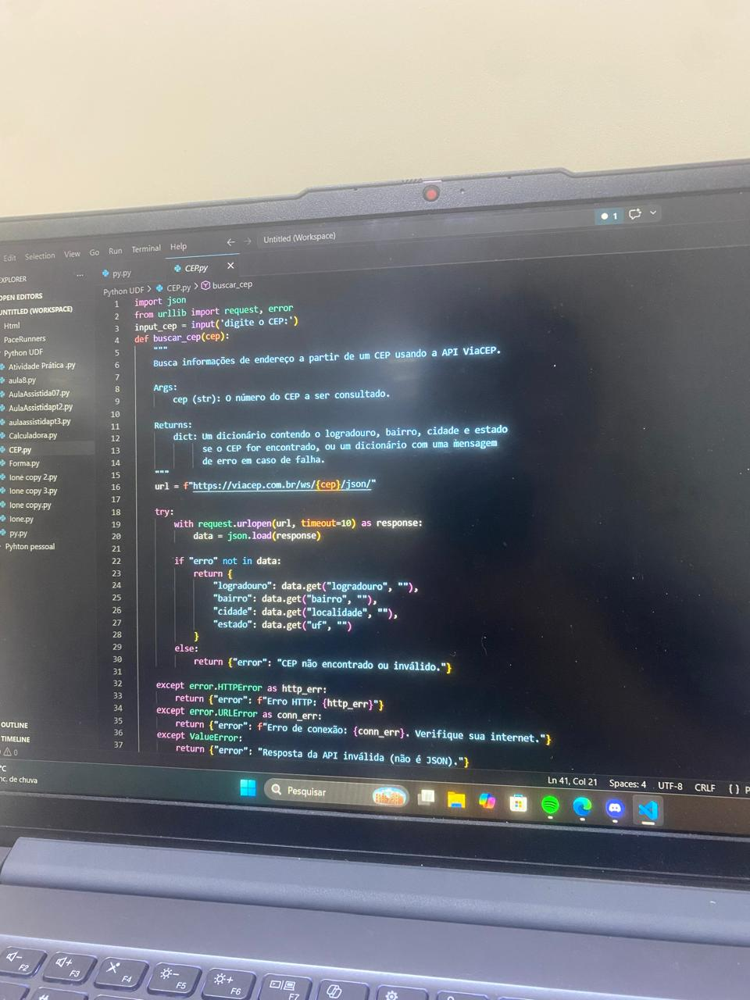

Monitoria para idosos na UDF
Apoio à inclusão digital de idosos
- Comunicação com usuários
- Solução de problemas técnicos
- Apoio ao atendimento
- Experiência com Windows, Linux e macOS
Brasília, DF · Engenharia de Software
Sempre em busca de novos desafios e aprendizados.
Estudo Engenharia de Software na UDF e faço monitoria para inclusão digital.
Após me formar no colégio, comecei a estudar para as carreiras militares, mas decidi seguir uma área que sempre me interessou: a tecnologia.
Durante esse período, também ministrei aulas particulares para alunos do ensino médio, aprendendo cedo a ensinar e explicar conceitos.
Estou no início da formação em Engenharia de Software e tenho muito a aprender, mas chego com uma vantagem: conheço de perto os problemas que um sistema precisa resolver.
Eu quero fazer a diferença na sociedade por meio da tecnologia, por isso busco me dedicar e me tornar melhor no que faço.


Da experiência mais recente para a primeira.
Apoio à inclusão digital de idosos
Autônomo · alunos do CMB
UDF · 2º semestre

Assistente virtual de finanças pessoais com IA.

Site com tema de Oktoberfest feito com Bootstrap.